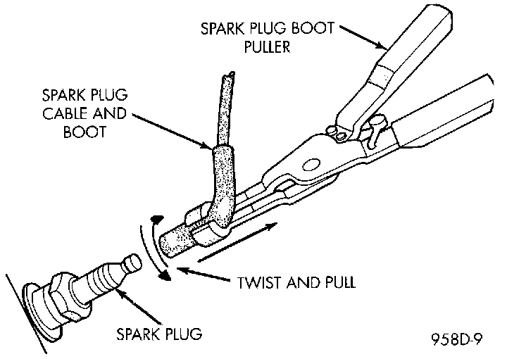
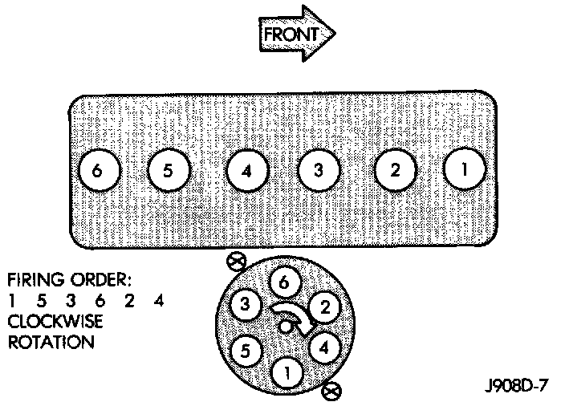

Ignition Cable: Service and Repair
SPARK PLUG CABLESFig. 22 Cable Removal:

CAUTION: When disconnecting a high voltage cable from a spark plug or from the distributor cap, twist the rubber boot slightly (1/2 turn) to break it loose (Fig. 22). Grasp the boot (not the cable) and pull it off with a steady, even force.
Fig. 23 Firing Order - 4.0L:

Install cables into the proper engine cylinder firing order (Fig. 23).
When replacing the spark plug and coil cables, route the cables correctly and secure in the proper retainers. Failure to route the cables properly can cause the radio to reproduce ignition noise. It could also cause cross ignition of the plugs or short circuit the cables to ground.
When installing new cables, make sure a positive connection is made. A snap should be felt when a good connection is made between the plug cable and the distributor cap tower.